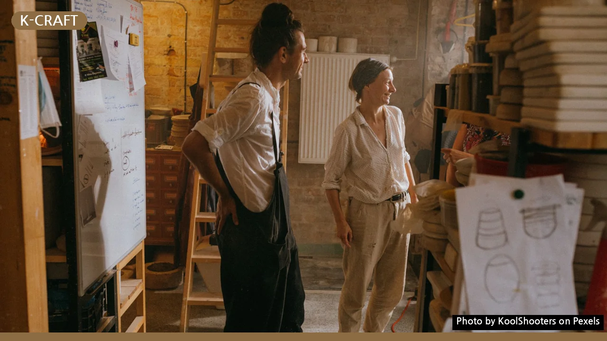
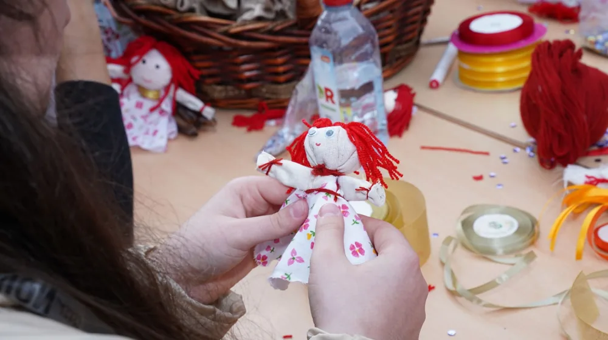

공예 원데이클래스, 나에게 맞는 곳 3단계로 고르는 비법
사진: KoolShooters / Pexels (무료 이미지, 출처 표기)
나에게 딱 맞는 공예 원데이클래스, 어떻게 고를까요?

새로운 취미를 찾거나 특별한 경험을 원할 때, 공예 원데이클래스는 매력적인 선택지입니다. 하지만 도예, 가죽, 플라워 등 다양한 종류와 수많은 스튜디오 사이에서 어떤 클래스를 선택해야 할지 고민이 되는 경우가 많습니다.
이 글에서는 만족스러운 원데이클래스를 찾을 수 있도록, 인기 있는 공예 종류부터 나에게 맞는 클래스를 고르는 핵심 체크리스트, 그리고 합리적인 가격 비교 팁까지 2026년 9월 기준으로 자세히 안내해 드립니다. 이 가이드와 함께 나만의 특별한 경험을 만들어 보세요.
1단계: 원하는 공예 종류와 목표를 정해 보세요
원데이클래스를 선택하기 전, 어떤 공예에 관심이 있는지, 또 무엇을 만들고 싶은지 생각해 보는 것이 좋습니다. 아래 인기 있는 공예 종류들을 참고하여 나에게 맞는 분야를 찾아보세요.
- 도예 (세라믹): 흙을 만지며 나만의 접시, 컵, 화병 등을 만드는 공예입니다. 차분하고 집중적인 활동을 선호하며 실용적인 결과물을 원하는 분들에게 인기가 많습니다.
- 가죽 공예: 카드지갑, 키링, 파우치 등 가죽으로 소품을 만드는 클래스입니다. 섬세한 손재주와 꼼꼼함을 요구하며, 고급스러운 결과물을 얻을 수 있습니다.
- 플라워/라탄 공예: 생화나 드라이플라워로 꽃다발, 리스, 화병꽂이 등을 만들거나, 라탄으로 바구니, 트레이 등을 제작합니다. 자연 친화적이고 아기자기한 감성을 좋아하는 분들에게 추천합니다.
- 캔들/비누 공예: 다양한 향과 색상으로 나만의 캔들이나 천연 비누를 만드는 클래스입니다. 만들기가 비교적 쉽고 선물용으로도 좋습니다.
- 베이킹/쿠킹 클래스: 디저트나 특정 요리를 배우고 직접 만들어보는 클래스입니다. 맛있는 결과물을 바로 맛볼 수 있다는 장점이 있습니다.
이 외에도 쥬얼리 공예, 뜨개질, 유리 공예 등 다양한 원데이클래스가 존재합니다. 경험하고 싶은 분야나 만들고 싶은 품목을 구체적으로 정하면 선택의 폭을 좁힐 수 있습니다.
2단계: 나에게 맞는 클래스 세부 조건을 꼼꼼히 비교하세요
원하는 공예 종류를 정했다면, 이제는 구체적인 클래스들을 비교할 차례입니다. 다음 체크리스트를 활용하여 나에게 가장 적합한 클래스를 찾아보세요.
3단계: 만족도를 높이는 예약 및 준비물 안내
클래스 선택이 끝났다면, 즐거운 경험을 위한 마지막 단계인 예약과 준비가 중요합니다. 다음 사항들을 참고하여 빈틈없이 준비해 보세요.
1. 예약 및 결제
대부분의 원데이클래스는 온라인 예약 플랫폼(예: 프립, 숨고, 클래스101)이나 스튜디오 자체 홈페이지를 통해 예약 및 결제를 진행합니다. 원하는 날짜와 시간을 미리 확인하고 빠르게 마감될 수 있으니 서둘러 예약하는 것이 좋습니다.
2. 취소 및 환불 규정 확인
예약 전 반드시 취소 및 환불 규정을 확인해야 합니다. 개인적인 사정으로 참여가 어려울 경우를 대비하여 규정을 숙지해 두는 것이 현명합니다. 많은 스튜디오에서 수업일 며칠 전부터는 환불이 어렵거나 수수료가 부과될 수 있습니다.
3. 준비물 확인
대부분의 공예 원데이클래스는 재료와 도구를 스튜디오에서 제공하지만, 개인적으로 준비해야 할 물품이 있을 수 있습니다. 예를 들어, 앞치마, 편한 복장, 안경 등이 필요할 수 있으므로 예약 확정 시 안내되는 준비물 목록을 꼼꼼히 확인하세요.
4. 공방 위치 및 교통편 확인
수업 당일 헤매지 않도록 사전에 공방 위치와 교통편을 정확히 파악해 두는 것이 좋습니다. 주차 가능 여부도 미리 확인하면 편리합니다.
성공적인 원데이클래스 경험을 위한 추가 팁
- 후기 적극 활용하기: 실제 참여자들의 솔직한 후기는 클래스의 장단점과 분위기를 파악하는 데 큰 도움이 됩니다. 특히 불만족 후기에서 반복적으로 언급되는 단점이 있는지 확인하는 것이 좋습니다.
- 초보자 친화적인 곳 선택하기: 처음 공예를 접하는 경우, 초보자를 위한 상세한 설명을 제공하고, 개별 지도가 가능한 소수 정예 클래스를 선택하는 것이 만족도를 높이는 방법입니다.
- 강사에게 질문 주저하지 않기: 궁금한 점이나 만들고 싶은 것에 대해 미리 강사에게 질문하여, 기대하는 결과물을 얻을 수 있는지 확인하는 것이 중요합니다.
공예 원데이클래스는 일상에 활력을 불어넣고, 새로운 재능을 발견할 수 있는 좋은 기회입니다. 이 가이드를 통해 자신에게 딱 맞는 클래스를 찾아 즐거운 시간을 보내시길 바랍니다.
🔗 이 글도 함께 보면 좋아요: 내게 딱 맞는 클라우드 저장소? 주요 요금제별 완벽 비교 가이드